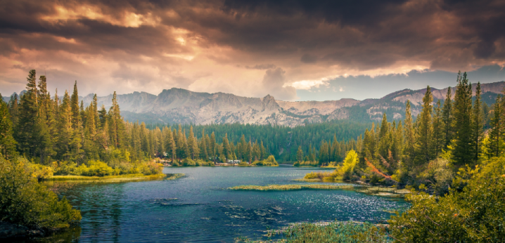

Imágenes en HTML
En esta página aprenderás a utilizar la etiqueta
<img>, imágenes adaptables, formatos de imagen, SVG,
marcos, sombras y la etiqueta <picture>.
Etiqueta <img>
La etiqueta <img> se usa para incrustar imágenes en
una página web. A continuación, se muestra un ejemplo básico:
El atributo alt es importante por razones de accesibilidad;
describe el contenido de la imagen si esta no se carga o para lectores
de pantalla.
<img src="../recursos/paisaje.jpg" alt="Descripción de la imagen">
Propiedades width y height
Usar los atributos width y height permite
especificar el tamaño de la imagen en píxeles. Sin embargo, es mejor
evitar distorsionar las imágenes (cambiar solo uno de estos atributos
sin mantener la proporción). Ejemplo:
<img src="../recursos/paisaje.jpg" width="400" height="300" alt="Imagen con ancho y alto definidos">
Propiedades width y height en css
img {
height: 300px;
width: 200px;
}
Imágenes adaptables
Para que las imágenes se adapten al tamaño del contenedor, podemos usar
CSS. Esto asegura que la imagen se redimensione correctamente en
dispositivos móviles. Para ello se configura el tamaño porcentualmente y, para
mantener la proporción, el valor auto:
img {
width: 60%;
height: auto;
}
En este caso, la imagen se adapta al tamaño de su contenedor manteniendo
las proporciones correctas.
Imágenes adaptables con tamaño máximo
Se puede definir un tamaño máximo para que la imagen sea responsive y al
mismo tiempo no se difumine al hacer zoom.
img {
max-width: 100%;
height: auto;
}

En este caso, la imagen se adapta al tamaño de su contenedor manteniendo
las proporciones correctas.
Formatos de imagen
Los formatos de imagen más comunes en la web son JPEG, PNG, GIF y WebP.
Aquí una descripción de cada uno:
-
JPEG: Adecuado para fotos con muchos colores y
detalles. Alta compresión, pero con pérdida de calidad.
-
PNG: Ideal para imágenes con áreas transparentes y
gráficos. Sin pérdida de calidad.
-
GIF: Formato limitado a 256 colores, ideal para
animaciones sencillas.
-
WebP: Formato moderno que ofrece compresión sin
pérdida o con pérdida, y soporta transparencia.
Imágenes SVG
SVG (Gráficos Vectoriales Escalables) es un formato basado en vectores,
lo que significa que puede escalarse sin pérdida de calidad. Es ideal
para logotipos, íconos y gráficos simples:
<img src="recuros/gato.svg" alt="Ejemplo de imagen SVG">
Las imágenes SVG son independientes de la resolución, por lo que son
perfectas para pantallas de alta densidad de píxeles.
Marco y sombra en imágenes
Con CSS, es fácil añadir marcos y sombras a las imágenes para mejorar su
presentación. Ejemplo de CSS para añadir un marco y sombra:
img {
width: 60%;
height: auto;
border: 5px solid #2980b9;
border-radius: 10px;
/*radiox, radioy, desenfoque, separacion, color*/
box-shadow: 4px 4px 10px 2px rgba(0, 0, 0, 0.5);
}
La etiqueta <picture>
La etiqueta <picture> permite especificar diferentes
fuentes de imagen para adaptarse a diferentes condiciones, como el
tamaño de la pantalla o la densidad de píxeles. Ejemplo:
<picture>
<source srcset="../recursos/gato_grande.png" media="(min-width: 801px)">
<source srcset="../recursos/gato_menos_grande.png" media="(min-width: 600px) and (max-width: 800px)">
<source srcset="../recursos/gato_chico.png" media="(max-width: 599px)">
<img src="imagen-grande.jpg" alt="Descripción de la imagen">
</picture>
En este ejemplo, se cargarán diferentes versiones de la imagen según el
tamaño de la pantalla del usuario.
Ejemplo con picture y Orientación "Portrait"
El siguiente ejemplo utiliza la etiqueta picture para
cargar diferentes imágenes dependiendo de la orientación de la pantalla
(portrait o landscape).
<picture>
<source media="(orientation: portrait)" srcset="../recursos/portrait.png" />
<source media="(orientation: landscape)" srcset="../recursos/landscape.png" />
<img src="../recursos/landscape.png" alt="Ejemplo de Picture con orientación portrait" />
</picture>